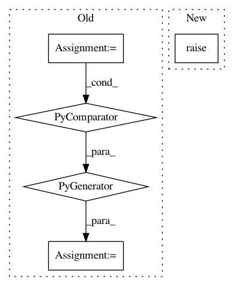

8a2e857746dbab697b0045aa6c38133f3de71250,nalaf/learning/taggers.py,StubSameSentenceRelationExtractor,annotate,#StubSameSentenceRelationExtractor#Any#,138
Before Change
for document in dataset:
for part in document:
for ann_1, ann_2 in product(
(a for a in part.annotations if a.class_id == self.entity1_class),
(a for a in part.annotations if a.class_id == self.entity2_class)):
if part.get_sentence_index_for_annotation(ann_1) == part.get_sentence_index_for_annotation(ann_2):
rel = Relation(self.relation_type, ann_1, ann_2)
part.predicted_relations.append(rel)
class StubSameDocumentPartRelationExtractor(RelationExtractor):
// Would be better if it just ussed an existing edge generator
def __init__(self, entity1_class, entity2_class, relation_type):
After Change
def annotate(self, dataset):
super().annotate(dataset)
class StubSameDocumentPartRelationExtractor(RelationExtractor):
In pattern: SUPERPATTERN
Frequency: 3
Non-data size: 5
Instances
Project Name: Rostlab/nalaf
Commit Name: 8a2e857746dbab697b0045aa6c38133f3de71250
Time: 2016-11-14
Author: i@juanmi.rocks
File Name: nalaf/learning/taggers.py
Class Name: StubSameSentenceRelationExtractor
Method Name: annotate
Project Name: Rostlab/nalaf
Commit Name: 8a2e857746dbab697b0045aa6c38133f3de71250
Time: 2016-11-14
Author: i@juanmi.rocks
File Name: nalaf/learning/taggers.py
Class Name: StubSameSentenceRelationExtractor
Method Name: annotate
Project Name: Rostlab/nalaf
Commit Name: ebe4256914107273feb1da940fc3e4237731365e
Time: 2016-11-11
Author: i@juanmi.rocks
File Name: nalaf/preprocessing/edges.py
Class Name: SimpleEdgeGenerator
Method Name: generate
Project Name: analysiscenter/batchflow
Commit Name: 98d1d7a0ad751fd91e6ec9c8ec6668bdea877cd1
Time: 2017-06-14
Author: rhudor@gmail.com
File Name: dataset/batch_image.py
Class Name: ImagesBatch
Method Name: load